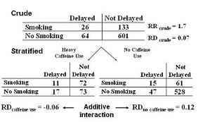
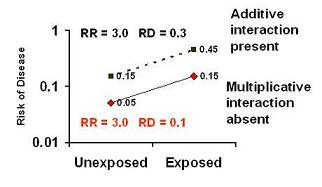
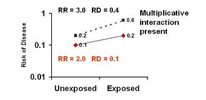
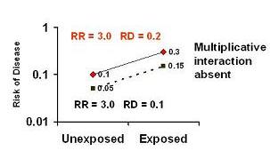
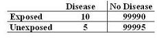
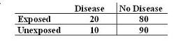
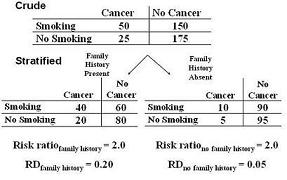

Additive Interaction
Lead Author(s): Jeff Martin, MD
Definition of Additive Interaction
When there is interaction in terms of the difference measure of association or the risk difference.
- we call it an additive interaction.
When there is interaction in terms of the ratio measure of association or the risk ratio,
Example of Additive Interaction
Risk difference or RD is the absolute difference between exposed and unexposed.
- In the 2x2 tables below, this is simply the risk in the exposed minus the risk in the unexposed.
When there is interaction in terms of the ratio measure of association (in this case, the risk ratio), we call this multiplicative interaction.

- So, just as there could be interaction in the risk ratio there might also be an interaction in the risk difference.
- In fact, here there is. Among caffeine users, the risk difference is -0.06. Smokers have a 0.06 less risk. Among non-caffeine users, smokers have 0.12 more risk
This is called additive interaction because there is a difference in risk between the caffeine users and the non-caffeine users. (Some texts call this attributable risk.)
Assessment of Whether Interaction Is Present
Assessment of whether interaction is present depends upon the measure of association:
(1) Ratio measures (multiplicative interaction)
(2) Difference measures additive interaction.
So, when talking about interaction, we have to be precise about whether we are talking about interaction of ratio measures (i.e., multiplicative interaction) or interaction of differences measures (i.e., additive interaction) or both. That’s why some like to call this effect-measure modification, because whether or not interaction is occurring depends upon the measure of association in question.
Absence of Multiplicative Interacton- Presence of Additive Interaction
Absence of multiplicative interaction typically implies presence of additive interaction as seen in graph below.
As you can see here, although there is no interaction for the ratio of risks,

When the third variable is present, the risk difference is 0.1, but when the third variable is absent the risk difference is 0.3.
Presence of Additive Interaction May Have Multiplicative Interaction
The presence of additive interaction may or may not be accompanied by multiplicative interaction.

- In the graph below, we see additive interaction (RD 0.4, 0.1) but no multiplicative interaction.
- The risk ratios are the same (RR 3.0).

Presence of Qualtiative Multiplicative Interaction = Qualitiative Additive Interaction
Presence of qualitative multiplicative interaction is always accompanied by qualitative additive interaction.
Choosing Additive Measures
Which do you want to use: additive versus multiplicative measures?
Additive measures (e.g., risk difference):
- Readily translated into impact of an exposure (or intervention) in terms of absolute number of outcomes prevented
e.g. 1/risk difference = number needed to treat to prevent (or avert) one case of disease or
- number of exposed persons one needs to take the exposure away from to avert one case of disease
- Very dependent upon background incidence of disease
- Gives "public health impact" of the exposure
Minor vs Major Public Health Importance
Causally related but minor public health importance: Consider the figure below.
- Disease is very rare but the exposure in question is associated with a two fold risk of disease.
- While this may be causally related, the risk difference between exposed and unexposed is very small, just 0.00005.
- That means you have to eliminate exposure in 20,000 persons just to avert one case of disease.

A simple way to infer this is if you took 100000 exposed persons and then took away their exposure, you would end up 5 cases of disease (the background) and 5 cases of disease averted.
- In other words, take away exp from 100000 and avert 5 cases, translates into take away exposure in 20,000 to avert 1 case.
Causally related and major public health importance: Consider the figure below.
- Here, the disease is more common in unexposed but the relative risk of the exposure is still 2, just like above.
- In this case, the risk difference is 0.1
- That means that you only need to eliminate exposure in 10 persons to avert one case of disease.

-
- You could get much more bang for your buck if you went after this exposure as opposed to the exposure in the first figure.
Reporting: Additive Interaction or Risk Ratio?
Let's look at the figure below from a hypothetical example of a cohort study.
- Smoking is the exposure.
- Cancer (say, one type of cancer, or a variety of cancers) is the outcome.
- Family history of cancer is the third variable in question.
In the figure below we see that there is not multiplicative interaction, the risk ratios are the same in both strata (RR 2.0).
- However, there is apparently additive interaction.
- The risk difference is 0.2 among those with a family history and 0.05 among those without a family history.

Goal: Etiology/Risk Factor - If your goal was simply to assess whether smoking was a risk factor, you would probably go with the risk ratio of 2 and not bother to report the additive interaction to your readers. After all, it is much easier to report just one number instead of two particularly when your study may have many different risk factors.
Goal: Defining Sub-groups to Target - But say you already had a pretty good sense that smoking was a risk factor and now your goal is to see where you can have the most impact in terms of getting persons to stop smoking. So, if your goal is to identify subgroups of persons to target with an intervention (say a smoking cessation intervention), then you have actually found something interesting. The impact of an intervention would differ depending upon the third variable, family history.
- In the stratum with a family history present, you just need to eliminate smoking in 5 persons to avert one case of cancer.
- In the family history absent stratum, you need to eliminate smoking in 20 persons to avert one case of cancer.
- Hence, the most efficient group to intervene upon is those with a family history.
Hence, it is well worth it to report the presence of interaction based upon family history. This is the mathematical basis of choosing high risk groups when searching for the targets for such interventions.